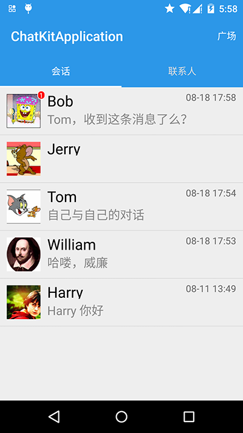
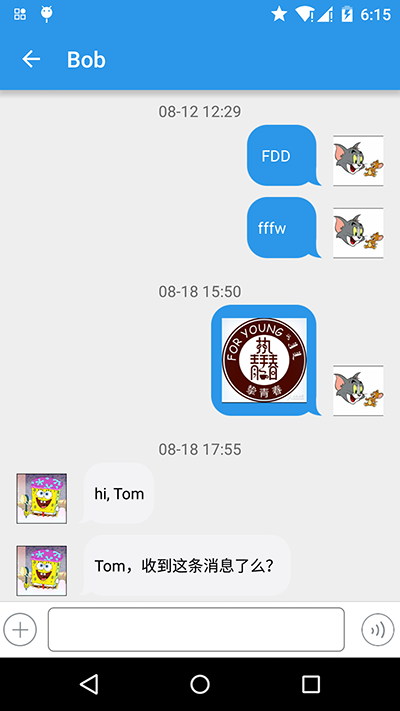
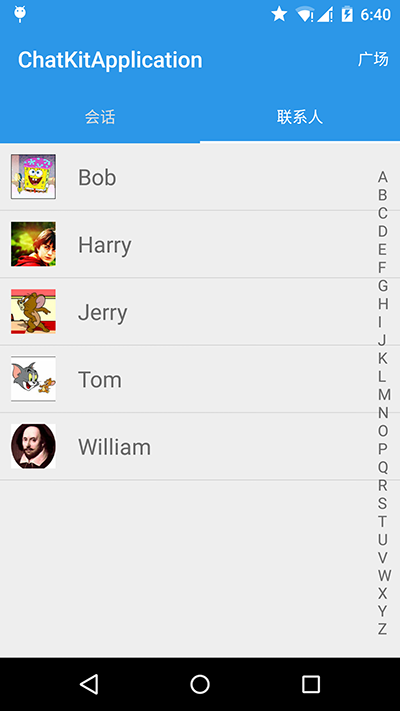
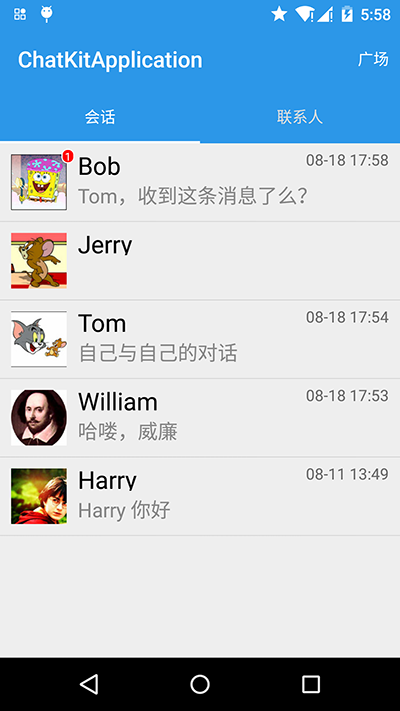
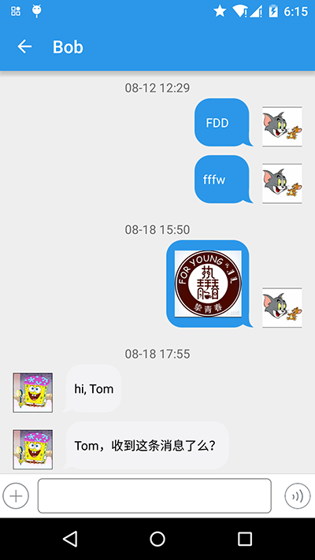
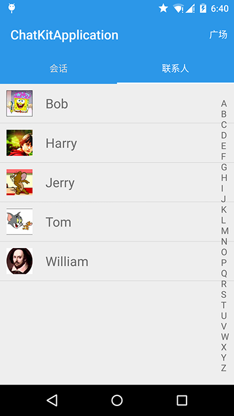

如果需要了解 iOS 版本请点击: ChatKit 使用指南 · iOS
ChatKit 是由 LeanCloud 官方推出的、基于 LeanCloud 实时通信 SDK「LeanMessage」开发并封装了简单 UI 的聊天套件。它可以帮助开发者快速掌握 LeanMessage 的技术细节，轻松扩展和实现常用的聊天功能。
ChatKit 是一个免费且开源的项目组件，提供完全自由的授权协议，开发者可以对其进行任意的自定义和二次封装。ChatKit 的底层依然基于 LeanCloud 为各平台推出的 SDK，其最大特点是把聊天常用的一些功能配合 UI 一起提供给开发者。
git clone git@github.com:leancloud/LeanCloudChatKit-Android.git
获取源代码之后，用 Android Studio 打开项目，左侧的 Project 视图显示为：
「ChatKit-Android」Project 包含两个模块：
然后，请确保电脑上已经连接了一台真机或者虚拟机用作调试。
点击 Debug 或者 Run，第一次启动会运行 Gradle Build。建议打开全局网络代理，否则 Gradle Build 可能会因为网络原因无法完成。
开发者可以将 ChatKit 导入到自己的 Project 中使用。下面我们将新建一个 Project（名为 ChatDemo） 用以导入 ChatKit。导入方式有三种：
新建一个 Application Project，取名为 ChatDemo。其根目录下的 build.gradle 的标准配置为：
build.gradle
buildscript { repositories { jcenter() // 这里是 LeanCloud 的包仓库 maven { url "{{maven_uri}}" } } dependencies { classpath 'com.android.tools.build:gradle:2.0.0' } } allprojects { repositories { jcenter() // 这里是 LeanCloud 的包仓库 maven { url "{{maven_uri}}" } } }
{{maven_uri}}
修改 app/build.gradle 文件，在 dependencies 中添加依赖：
app/build.gradle
dependencies { compile ('cn.leancloud.android:chatkit:1.0.6') }
ChatKit
git clone https://github.com/leancloud/LeanCloudChatKit-Android.git`
leancloudchatkit
ChatDemo
ChatDemo/settings.gradle
include ':leancloudchatkit'
ChatDemo/app/build.gradle
compile project(":leancloudchatkit")
最后只要 Sync Project，这样 ChatKit 就算是导入到项目中了。
一、实现自己的 Application
ChatKit 在使用之前需要进行初始化，就像直接使用 LeanCloud 基础 SDK 时需要调用 AVOSCloud.initialize(appId, appKey) 一样。初始化逻辑应该放在 Application.onCreate 方法中实现。
AVOSCloud.initialize(appId, appKey)
Application.onCreate
ChatDemo 中新建一个 Class，名字叫做 ChatDemoApplication，让它继承自 Application 类，代码如下：
public class ChatDemoApplication extends Application { // appId、appKey 可以在「LeanCloud 控制台 > 设置 > 应用 Key」获取 private final String APP_ID = "********"; private final String APP_KEY = "********"; @Override public void onCreate() { super.onCreate(); // 关于 CustomUserProvider 可以参看后面的文档 LCChatKit.getInstance().setProfileProvider(CustomUserProvider.getInstance()); LCChatKit.getInstance().init(getApplicationContext(), APP_ID, APP_KEY); } }
二、在 AndroidMainfest.xml 中配置 ChatDemoApplication
AndroidMainfest.xml
<application ... android:name=".ChatDemoApplication" > ... </application>
三、实现自己的用户体系
一般来说，聊天界面要相对复杂一些，不但要支持文字、表情、图片、语音等消息格式，还要展示用户信息，比如用户的头像、昵称等。而 LeanCloud 的消息流中只包含用户的 clientId 这一唯一标识，所以要获取头像这类额外的用户信息，就需要开发者接入自己的用户系统来实现。
clientId
为了保证通用性和扩展性，让开发者可以更容易将聊天界面嵌入自己的应用中，ChatKit 在设计上抽象出了一个「用户体系」的接口，需要开发者自己提供用户信息的获取方式。该接口只有一个方法需要开发者实现：
/** * 用户体系的接口，开发者需要实现此接口来接入 LCChatKit */ public interface LCChatProfileProvider { // 根据传入的 clientId list，查找、返回用户的 Profile 信息(id、昵称、头像) public void fetchProfiles(List<String> userIdList, LCChatProfilesCallBack profilesCallBack); }
为此，我们在 ChatDemo 中新建一个 Class，名字叫做 CustomUserProvider，代码如下：
public class CustomUserProvider implements LCChatProfileProvider { private static CustomUserProvider customUserProvider; public synchronized static CustomUserProvider getInstance() { if (null == customUserProvider) { customUserProvider = new CustomUserProvider(); } return customUserProvider; } private CustomUserProvider() { } private static List<LCChatKitUser> partUsers = new ArrayList<LCChatKitUser>(); // 此数据均为模拟数据，仅供参考 static { partUsers.add(new LCChatKitUser("Tom", "Tom", "http://www.avatarsdb.com/avatars/tom_and_jerry2.jpg")); partUsers.add(new LCChatKitUser("Jerry", "Jerry", "http://www.avatarsdb.com/avatars/jerry.jpg")); partUsers.add(new LCChatKitUser("Harry", "Harry", "http://www.avatarsdb.com/avatars/young_harry.jpg")); partUsers.add(new LCChatKitUser("William", "William", "http://www.avatarsdb.com/avatars/william_shakespeare.jpg")); partUsers.add(new LCChatKitUser("Bob", "Bob", "http://www.avatarsdb.com/avatars/bath_bob.jpg")); } @Override public void fetchProfiles(List<String> list, LCChatProfilesCallBack callBack) { List<LCChatKitUser> userList = new ArrayList<LCChatKitUser>(); for (String userId : list) { for (LCChatKitUser user : partUsers) { if (user.getUserId().equals(userId)) { userList.add(user); break; } } } callBack.done(userList, null); } public List<LCChatKitUser> getAllUsers() { return partUsers; } }
当用户昵称和头像需要更新时，需要覆盖旧的 LCChatKitUser 对象并更新本地缓存：
LCChatKitUser
LCChatKitUser user = new LCChatKitUser("唯一 userId 不可变", "要变更的昵称", "要变更的 avatarURL"); LCIMProfileCache.getInstance().cacheUser(user);
四、打开实时通讯，并且跳转到聊天页面
我们支持通过两种方式来打开聊天界面：
intent.putExtra(LCIMConstants.PEER_ID, "peermemberId")
LCIMConstants.CONVERSATION_ID, "particularConversationId")
下面的代码展示了如果通过第一种方式来开启聊天界面：
LCChatKit.getInstance().open("Tom", new AVIMClientCallback() { @Override public void done(AVIMClient avimClient, AVIMException e) { if (null == e) { finish(); Intent intent = new Intent(MainActivity.this, LCIMConversationActivity.class); intent.putExtra(LCIMConstants.PEER_ID, "Jerry"); startActivity(intent); } else { Toast.makeText(MainActivity.this, e.toString(), Toast.LENGTH_SHORT).show(); } } });
这样，Tom 就可以和 Jerry 愉快地聊天了。
以下介绍在 ChatKit 中开发者常需要关注的业务逻辑组件（Interface）和界面组件（UI）。
LCChatKitUser 是 ChatKit 封装的参与聊天的用户，它提供了如下属性：
userId
LCChatKit.open
avatarUrl
name
使用这些默认的属性基本可以满足一个聊天应用的需求，同时开发者可以通过继承 LCChatKitUser 类实现更多属性。具体用法请参考 Demo 中的 MembersAdapter.java。
MembersAdapter.java
LCChatProfileProvider 接口需要用户 implements 后实现 fetchProfiles 函数，以使 ChatKit 在需要显示的时候展示用户相关的信息。
LCChatProfileProvider
fetchProfiles
例如 Demo 中的 CustomUserProvider 这个类，它实现了 LCChatProfileProvider 接口，在 fetchProfiles 方法里加载了 Tom、Jerry 等人的信息。
CustomUserProvider
LCChatKit 是 ChatKit 的核心类，具体逻辑可以参看代码，注意以下几个主要函数：
LCChatKit
public void init(Context context, String appId, String appKey)
onCreate
public void setProfileProvider(LCChatProfileProvider profileProvider)
public void open(final String userId, final AVIMClientCallback callback)
对话 AVIMConversation 是 LeanMessage 封装的用来管理对话中的成员以及发送消息的载体，不论是群聊还是单聊都是在一个对话当中；而对话列表可以作为聊天应用默认的首页显示出来，主流的社交聊天软件，例如微信，就是把最近的对话列表作为登录后的首页。
AVIMConversation
因此，我们也提供了对话列表 LCIMConversationListFragment 页面供开发者使用，在 Demo 项目中的 MainActivity 中的 initTabLayout 方法中演示了如何引入对话列表页面：
LCIMConversationListFragment
MainActivity
initTabLayout
private void initTabLayout() { String[] tabList = new String[]{"会话", "联系人"}; final Fragment[] fragmentList = new Fragment[] {new LCIMConversationListFragment(), new ContactFragment()}; // 以上这段代码为新建了一个 Fragment 数组，并且把 LCIMConversationListFragment 作为默认显示的第一个 Tab 页面 tabLayout.setTabMode(TabLayout.MODE_FIXED); for (int i = 0; i < tabList.length; i++) { tabLayout.addTab(tabLayout.newTab().setText(tabList[i])); } ... }
具体的显示效果如下：

聊天界面是显示频率最高的前端页面，ChatKit 通过 LCIMConversationFragment 和 LCIMConversationActivity 来实现这一界面。在 Demo 的 ContactItemHolder 界面包含了使用 LCIMConversationActivity 的实例：
LCIMConversationFragment
LCIMConversationActivity
ContactItemHolder
public void initView() { nameView = (TextView)itemView.findViewById(R.id.tv_friend_name); avatarView = (ImageView)itemView.findViewById(R.id.img_friend_avatar); itemView.setOnClickListener(new View.OnClickListener() { @Override public void onClick(View v) { // 点击联系人，直接跳转进入聊天界面 Intent intent = new Intent(getContext(), LCIMConversationActivity.class); // 传入对方的 Id 即可 intent.putExtra(LCIMConstants.PEER_ID, lcChatKitUser.getUserId()); getContext().startActivity(intent); } }); }

因为 ChatKit 是与应用的用户体系完全解耦的，所以 ChatKit 中并没有包含联系人列表页面，但部分开发者可能有此需求，所以 chatkitapplication 实现了一个基于 LCChatProfileProvider 的联系人列表页面，具体代码可以参考 ContactFragment.java， 具体效果如下：

ChatKit 组件收费么？ ChatKit 是完全开源并且免费给开发者使用，使用聊天所产生的费用以账单为准。
接入 ChatKit 有什么好处？ 它可以减轻应用或者新功能研发初期的调研成本，直接引入使用即可。ChatKit 从底层到 UI 提供了一整套的聊天解决方案。
ChatKit 使用指南 · Android
ChatKit 是由 LeanCloud 官方推出的、基于 LeanCloud 实时通信 SDK「LeanMessage」开发并封装了简单 UI 的聊天套件。它可以帮助开发者快速掌握 LeanMessage 的技术细节，轻松扩展和实现常用的聊天功能。
ChatKit 是一个免费且开源的项目组件，提供完全自由的授权协议，开发者可以对其进行任意的自定义和二次封装。ChatKit 的底层依然基于 LeanCloud 为各平台推出的 SDK，其最大特点是把聊天常用的一些功能配合 UI 一起提供给开发者。
获取项目
运行 Demo
获取源代码之后，用 Android Studio 打开项目，左侧的 Project 视图显示为：
「ChatKit-Android」Project 包含两个模块：
是一个封装了 LeanCloud 实时通讯的 UI lib，其目的是让开发者更快速地接入 LeanCloud 实时通讯的功能。
为 Demo 项目，它是一个简单的示例项目，用来指导开发者如何使用 leancloudchatkit。
然后，请确保电脑上已经连接了一台真机或者虚拟机用作调试。
点击 Debug 或者 Run，第一次启动会运行 Gradle Build。建议打开全局网络代理，否则 Gradle Build 可能会因为网络原因无法完成。
使用方法
开发者可以将 ChatKit 导入到自己的 Project 中使用。下面我们将新建一个 Project（名为 ChatDemo） 用以导入 ChatKit。导入方式有三种：
新建一个 Application Project，取名为 ChatDemo。其根目录下的
build.gradle的标准配置为：Gradle 导入
修改
app/build.gradle文件，在 dependencies 中添加依赖：源代码导入
ChatKit文件夹中，或者直接下载 zip 包自行解压缩到此文件夹下）：leancloudchatkit复制到ChatDemo根目录；ChatDemo/settings.gradle加入include ':leancloudchatkit'；ChatDemo/app/build.gradle，在 dependencies 中添加compile project(":leancloudchatkit")。最后只要 Sync Project，这样 ChatKit 就算是导入到项目中了。
自定义使用
一、实现自己的 Application
ChatKit 在使用之前需要进行初始化，就像直接使用 LeanCloud 基础 SDK 时需要调用
AVOSCloud.initialize(appId, appKey)一样。初始化逻辑应该放在Application.onCreate方法中实现。ChatDemo 中新建一个 Class，名字叫做 ChatDemoApplication，让它继承自 Application 类，代码如下：
二、在
AndroidMainfest.xml中配置 ChatDemoApplication三、实现自己的用户体系
一般来说，聊天界面要相对复杂一些，不但要支持文字、表情、图片、语音等消息格式，还要展示用户信息，比如用户的头像、昵称等。而 LeanCloud 的消息流中只包含用户的
clientId这一唯一标识，所以要获取头像这类额外的用户信息，就需要开发者接入自己的用户系统来实现。为了保证通用性和扩展性，让开发者可以更容易将聊天界面嵌入自己的应用中，ChatKit 在设计上抽象出了一个「用户体系」的接口，需要开发者自己提供用户信息的获取方式。该接口只有一个方法需要开发者实现：
为此，我们在 ChatDemo 中新建一个 Class，名字叫做 CustomUserProvider，代码如下：
当用户昵称和头像需要更新时，需要覆盖旧的
LCChatKitUser对象并更新本地缓存：四、打开实时通讯，并且跳转到聊天页面
我们支持通过两种方式来打开聊天界面：
此时，通过调用
intent.putExtra(LCIMConstants.PEER_ID, "peermemberId")来传递另一参与者的 clientId。此时，通过调用
LCIMConstants.CONVERSATION_ID, "particularConversationId")来传递特定对话 Id。下面的代码展示了如果通过第一种方式来开启聊天界面：
这样，Tom 就可以和 Jerry 愉快地聊天了。
接口以及组件
以下介绍在 ChatKit 中开发者常需要关注的业务逻辑组件（Interface）和界面组件（UI）。
用户
LCChatKitUser是 ChatKit 封装的参与聊天的用户，它提供了如下属性：userIdLCChatKit.open时传入的 userId。avatarUrlname使用这些默认的属性基本可以满足一个聊天应用的需求，同时开发者可以通过继承
LCChatKitUser类实现更多属性。具体用法请参考 Demo 中的MembersAdapter.java。用户信息管理类
LCChatProfileProvider接口需要用户 implements 后实现fetchProfiles函数，以使 ChatKit 在需要显示的时候展示用户相关的信息。例如 Demo 中的
CustomUserProvider这个类，它实现了LCChatProfileProvider接口，在fetchProfiles方法里加载了 Tom、Jerry 等人的信息。核心类
LCChatKit是 ChatKit 的核心类，具体逻辑可以参看代码，注意以下几个主要函数：public void init(Context context, String appId, String appKey)onCreate中调用，否则可能会引起异常。public void setProfileProvider(LCChatProfileProvider profileProvider)public void open(final String userId, final AVIMClientCallback callback)对话列表界面
对话
AVIMConversation是 LeanMessage 封装的用来管理对话中的成员以及发送消息的载体，不论是群聊还是单聊都是在一个对话当中；而对话列表可以作为聊天应用默认的首页显示出来，主流的社交聊天软件，例如微信，就是把最近的对话列表作为登录后的首页。因此，我们也提供了对话列表
LCIMConversationListFragment页面供开发者使用，在 Demo 项目中的MainActivity中的initTabLayout方法中演示了如何引入对话列表页面：具体的显示效果如下：

聊天界面
聊天界面是显示频率最高的前端页面，ChatKit 通过
LCIMConversationFragment和LCIMConversationActivity来实现这一界面。在 Demo 的ContactItemHolder界面包含了使用LCIMConversationActivity的实例：具体的显示效果如下：

联系人列表页面
因为 ChatKit 是与应用的用户体系完全解耦的，所以 ChatKit 中并没有包含联系人列表页面，但部分开发者可能有此需求，所以 chatkitapplication 实现了一个基于 LCChatProfileProvider 的联系人列表页面，具体代码可以参考 ContactFragment.java， 具体效果如下：

常见问题
ChatKit 组件收费么？
ChatKit 是完全开源并且免费给开发者使用，使用聊天所产生的费用以账单为准。
接入 ChatKit 有什么好处？
它可以减轻应用或者新功能研发初期的调研成本，直接引入使用即可。ChatKit 从底层到 UI 提供了一整套的聊天解决方案。